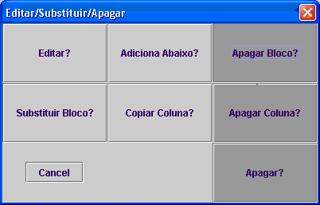

Para apagar um ou mais blocos, clicar com o botão esquerdo do rato sobre o bloco que se pretende apagar e seleccionar uma das seguintes opções:
Apagar bloco-Apaga o bloco.
Apagar coluna-Apaga o bloco seleccionado e todos os blocos abaixo deste.
Apagar-O mesmo que apagar coluna.
